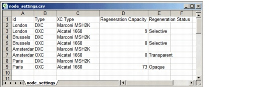

Importing and Exporting Data > Data File Formats > Node Settings Data Files
Node Settings Data Files
Node Settings data files use the format shown in Figure 5-5-Node Settings Data File . The first row contains two to five headers, depending on the amount of data you want to import; each subsequent row describes settings for one OCH or DCL node. To generate a .csv file that contains a mix of DCL and OCH settings, choose File > Export > Network Elements.
Note—This operation does not create new nodes. If you want to create new nodes using an import file, see Node Locations Data Files.
(optional)
(optional)
(optional)
Figure 5-5 Node Settings Data File

| Home © 1987-2007 OPNET Technologies, Inc. All Rights Reserved. This software may be covered by one or more U.S. Patents. See complete patent notice in the Legal Notices section. OPNET Support Center |